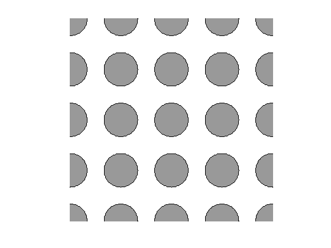
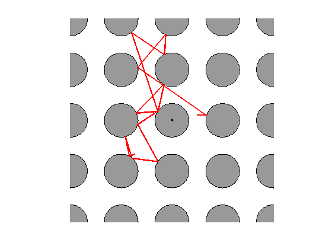
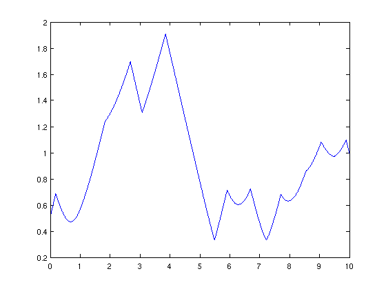
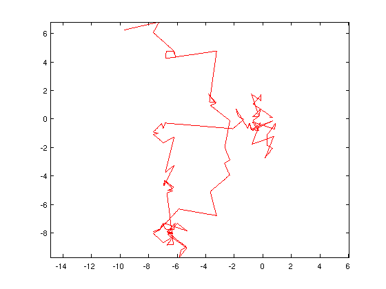
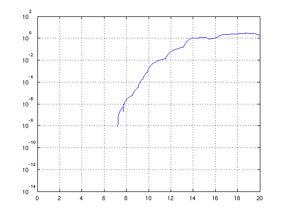

Bouncing photon, Sinai billiards
Nick Trefethen, May 2011
(Chebfun example geom/Sinai.m)
function Sinai
Problem 2 of the SIAM 100-Dollar, 100-Digit Challenge [1] reads like this:
"A photon moving at speed 1 in the x-y plane starts at time t=0 at (x,y) = (1/2,1/10) heading due east. Around every integer lattice point (i,j) in the plane, a circular mirror of radius 1/3 has been erected. How far from (0,0) is the photon at t=10?"
Mathematically speaking, this problem is elementary. All that's involved is straight lines, intersections with circles, and adjustments of angles at reflection. One hardly needs Chebfun to do the work, but there are some interesting benefits of doing it in this way. Let us take it as our task to compute a piecewise linear chebfun on [0,10] representing the position of the particle as a function of t. For simplcity we treat the two dimensions x,y by a single complex variable z=x+iy. So the result we compute will be a complex chebfun on [0,10] consisting of a concatenation of complex funs, each one piecewise linear.
We can draw the geometry like this:
circle = exp(pi*1i*(-50:50)/50)/3; for j = -2:2 for i = -2:2 c = i + 1i*j + circle; fill(real(c),imag(c),.6*[1 1 1]) hold on, plot(c,'k') end end axis([-2 2 -2 2],'square','off')
The computation will be carried out by a function "trajectory" that works as follows. An initial point p0 and direction d0 are given. These are complex numbers, and d0 has absolute value 1. The function then executes a loop in which it repeatedly calls a function "nextpoint" to find new values p and d corresponding to the next point of intersection with a circle and the corresponding new direction vector. Each call to nextpoint results in the creation of a one-fun linear chebfun "step" representing the next segment of the trajectory. This chebfun step is appended to the growing chebfun "b" with the syntax b = [b; step]. The process stops when the specified final time tfinal is passed, and b is trimmed to the required time interval by the command b = b{0,tfinal}.
Perhaps the only point of real substance in the computation is the matter of how nextpoint, given a position and direction, finds the next intersection with a circle. It does this by repeatedly moving a distance 0.15, checking for intersections with the currently closest circle, then moving again. The significance of the number 0.15 is that it is less than 1/6, which is the distance from any one circle to the unit squares surrounding the adjacent other circles. Therefore if one moves a distance <1/6 from any point p, the only circle with which a possible intersection might occur is the one closest to p. See Chapter 2 of [1], by Stan Wagon.
Here is trajectory.
function b = trajectory(p0,d0,tfinal) b = chebfun; t = 0; % initial chebfun: empty while t < tfinal [p,d] = nextpoint(p0,d0); % info for next step ds = abs(p-p0); % length of next step step = chebfun([p0,p],[0 ds]); % next step t = t+ds; b = [b; step]; % append step to chebfun p0 = p; d0 = d; end b = b{0,tfinal}; % trim chebfun to [0,tfinal] end
And here is nextpoint.
function [p,d] = nextpoint(p0,d0) hit = false; p = p0; smax = 0.15; % max travel per exploring step while ~hit m = round(p); % nearest centerpoint s = chebfun([p p+smax*d0],[0 smax]);% exploring step r = roots(abs(s-m)-(1/3)); % intersection with circle? r = r(r>1e-12); if length(r) == 0 p = p + smax*d0; % no intersection: go further else r = min(r); p = p + r*d0; % yes intersection: reflect hit = true; end end d = -(p-m)*conj(d0/(p-m)); % update direction vector end
How good is this as a method for computing bouncing-photon trajectories? Well, from the point of view of efficiency, it is not so great. On the other hand as a laboratory in which to explore this problem, it is very appealing, because it produces the trajectory b in such a conveniently usable form. We can now illustrate this in various ways. First of all, here is the solution trajectory for the Challenge problem:
plot(0,0,'.k') p0 = 0.5+0.1i; d0 = 1; tfinal = 10; b = trajectory(p0,d0,tfinal); LW = 'linewidth'; plot(b,'r',LW,2)
The distance from the origin is this:
dist = abs(b(tfinal))
dist = 0.995262348021387
How many bounces were there? We count the breakpoints of b and subtract 2 to account for the beginning and end points of the interval.
bounces = length(b.ends)-2
bounces =
14
At what times did the bounces take place?
b.ends(2:end-1)'
ans = 0.182020266194351 1.830215369827697 2.676701732572010 3.069204190063908 3.852062358926350 5.489016824979413 5.911194155267477 6.691786124546820 7.222579974116650 7.705362410402619 8.540423493917434 9.055096849805997 9.497215850846230 9.890502366828329
Where was the photon at time t=5, and at the end?
b([5 10])'
ans = -0.434045140075970 - 0.646156226351085i -0.736293245319479 + 0.669641245956335i
What was its distance from the origin as a function of t? For this we can execute plot(abs(b)), and we do this below both for the problem as posed and for the same problem over the time interval [0,100]:
clf, plot(abs(b),LW,1.6)
b2 = trajectory(.5+.1i,1,100); plot(abs(b2),LW,1.6)

Another interesting question is suggested by the trajectory figure above. On the second segment of the trajectory, the photon passes close to the mirror centered at (x,y)=(0,1) without hitting it. How close? We can determine the answer like this:
min(abs(b{0,2}-1i)-1/3)
ans = 0.014303145816499
This command assumes that the minimum occurs somewhere in the interval [0,2], but we can equally well examine precisely the second segment:
min(abs(b{b.ends(2),b.ends(3)}-1i)-1/3)
ans = 0.014303145816499
The second-to-last bounce shown in the trajectory figure almost reverses the photon, changing the angle of the trajectory by nearly pi. How close is it to pi? We can determine the number like this:
t = b.ends(end-2); d = diff(b); dtheta = angle(d(t-.1)) - angle(d(t+.1)) - pi
dtheta = 0.101876288928190
What does a longer trajectory of this system look like? Here is a plot of the trajectory to 200 time units computed a moment ago. One sees that in this system, for obvious reasons, some long segments appear but they are always approximately vertical or horizontal.
plot(b2,'r',LW,1), axis equal
Finally we come to the scientific heart of this problem, which is the question, what can we say of the accuracy of these bouncing photon computations? In fact, this system is chaotic, an instance of the chaotic dynamical system known as the Sinai billiard. Consider for example two trajectories that start with almost identical parameters. At every bounce at a mirror, the difference between the two paths will be amplified, and the effect over time is an exponential divergence of trajectories, which is the hallmark of chaos. We can explore this effect with the following code, which computes trajectories b and b2 over 20 time units from two initial points differing by 1e-14:
b = trajectory(p0,d0,20);
b2 = trajectory(p0+1e-14i,d0,20);
semilogy(abs(b2-b),LW,1.6), grid on
axis([0 20 1e-14 1e2])
 The first part of this figure is erroneous; Chebfun's tolerances give incorrect results, a matter to be investigated further. After 7 time units or so, the correct image begins to appear. The two trajectories are close to one another, but as the figure shows, they diverge exponentially. The rate of divergence is about exp(2.3t), and the coefficient 2.3 is known as the Lyapunov exponent for this system. So Chebfun has given us a nice illustration of chaos.
This sensitivity to perturbations has implications for the accuracy of the results presented in the last three pages. If the trajectories are so sensitive to perturbations, they will be affected significantly by rounding errors in floating point arithmetic at a relative level of around 1e-16, and by convergence tolerances in Chebfun at a similar level. Over 10 time units, about 10 digits of accuracy are lost, and thus our solution to the original 100-Digit Challenge problem is only accurate to about 5 digits. (The exact solution is 0.99526291944....) Over 20 time units, 20 digits or more will be lost, eliminating all accuracy entirely. The blame for these effects lies not with Chebfun, but with floating-point arithmetic. To get more digits, one needs to work in higher-digit arithmetic, and a solution to 10,002 digits is reported in Appendix B of [1].
Since the time scales go well beyond t=16, these observations imply that several of the plots in this Example are entirely wrong, at least after the first few time units. Or, more precisely, they are wrong in a literal sense, but they are right in the deeper sense of reflecting accurately the typical behavior of this system. A great deal of mathematical research and philosophical debate have been devoted to this idea of the deeper reality reflected in inexact simulations of chaotic systems. One of the ideas that arises here is the notion of "shadowing" [2].
References:
[1] F. Bornemann, D. Laurie, S. Wagon, J. Waldvogel, The SIAM 100-Digit Challenge, SIAM, 2004.
[2] S. H. Strogatz, Nonlinear Dynamics and Chaos, Addison Wesley, 1994.
end